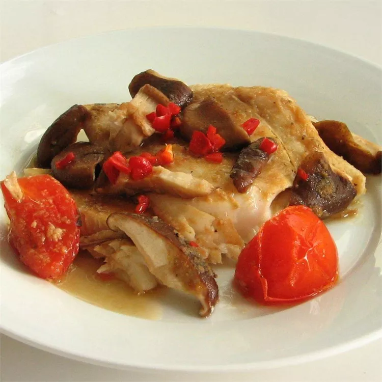

Home
Steamed Fish

An easy, fast, and yummy fish dish that my family absolutely loves. This is my mom from China's recipe. Serve with rice.
- Red Snapper Filets
- Salt
- Ground Black Pepper
- Grated Ginger
- Soy Sauce
- Sesame Oil
- Shiitake Mushrooms
- Tomato
- Red Chile Pepper
- Cilantro
- Boil Water and Fit Steamer
- Add toppings to the Fish
- Steam Fish for 15 Minutes
- That's it!